| ANALYSIS` SYMBOL |
JonesPlot
|
JonesPlot[jonesPupil_,func_,opts___] Plot the 2 by 2 Jones pupil object Inputs: jonesPupil - {JonesMatrices,spacing, center,axes, λ} the Jones Pupil data structure. JonesMatrices - {n, m, 2, 2} dimensional array, where {n, m} is the diemensionality of the original ray grid spacing - average grid spacing of the JonesMatrices in [mm]. center - the center location of the Jones Pupil in global coordinates {x, y, z} in [mm]. axes - the direction of the wavefront normal at the center location. λ - the wavelength of the Jones Pupil in [μm]. func- function to operate on a complex jones element i.e Re, Im Abs or Arg, (Arg[#]/(2 π)&) *The function must take a complex number and return a real number Outputs: Graphics grid of 2D Plot Objects |

The parameter function
| Input | Complex Number | A complex element of the matrix {{Ja,Jb},{Jc,Jd}}, that is being plotted | |
| OutPut | Real Number | Must return a real number for any input complex number | |
| Type | RefLink[Function,paclet:ref/Function] | A pure function, a custome function, or a mathematica function can be used |
Plot Options
| Any options from the PlotFunc can be used | RefLink[ListDensityPlot,paclet:ref/ListDensityPlot] •RefLink[ListPlot3D,paclet:ref/ListPlot3D] •RefLink[ArrayPlot,paclet:ref/ArrayPlot] • RefLink[ListContourPlot,paclet:ref/ListContourPlot] • RefLink[ListPointPlot3D,paclet:ref/ListPointPlot3D] |
Custom Functions
| Opts`Zoom | 0 | The central number of pixels to plot | |
| Opts`GridSize | 500 | The size of the graphics grid of the outputted plot | |
| Opts`PlotFunc | RefLink[ListDensityPlot,paclet:ref/ListDensityPlot] | Choose the plotting function either ListPlot3D, ListDensityPlot, or ListContourPlot (Default: ListContourPlot) | |
| Opts`Color | Rainbow | The color scheme of the plot | |
| Opts`Scaling | Full | Asign the plot range to the color scheme. Full => plot all matrix elements on the same scale Scaled => Plot each element on a seporate scale {min,max} => Plot all elements from min to max |

Basic Examples (2)
Use the Abs[ ] function to plot the apodization Jones Pupil
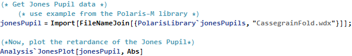
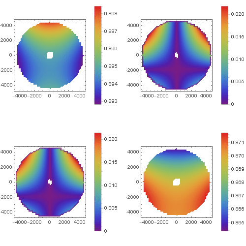

Use the Re[ ] function to plot the Jones Pupil real part of the Jones Pupil
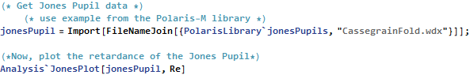
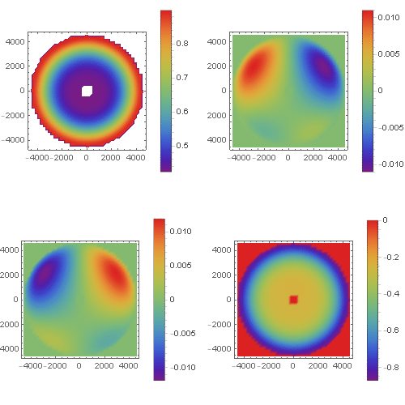
Options (5)
Plot (1)
All the options available to ListPlot3D, List DensityPlot3D and ListContourPlot are available to JonesParameterPlot.
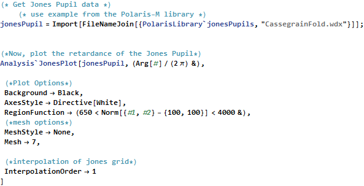
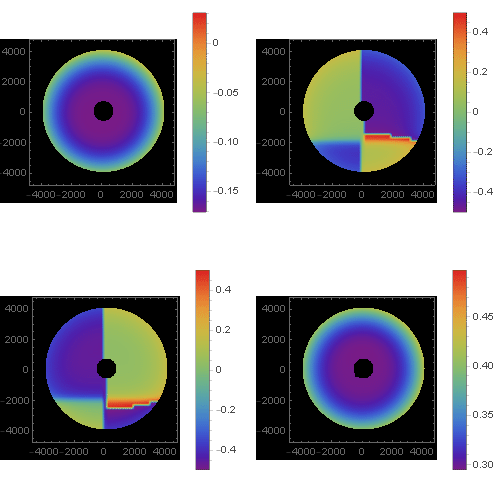

Specific Options (5)
PlotFunc (1)
There are several plotting routines available for the JonesPlot
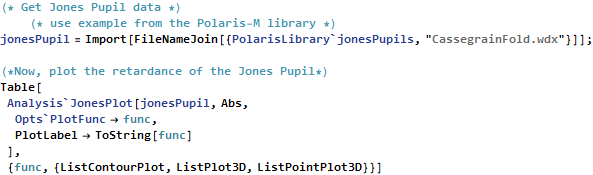
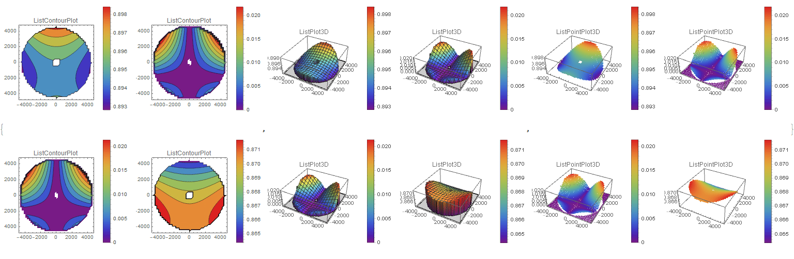

Scaling (1)
There are several different plot ranges can be used. The option Opts`Scaling controles this.
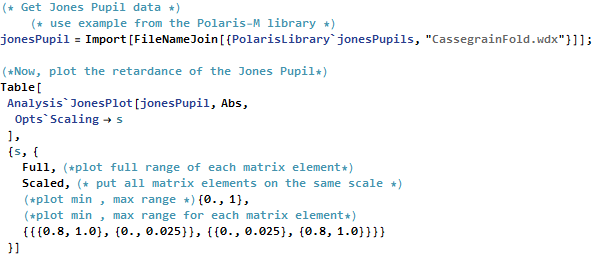
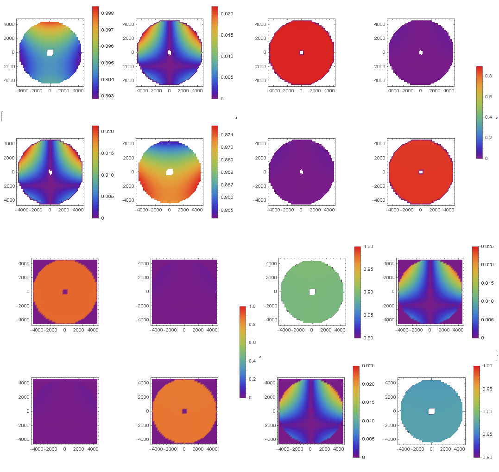

Color (1)
Any of the built in color schemes can be used.
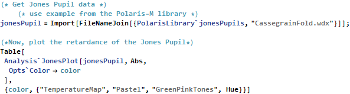
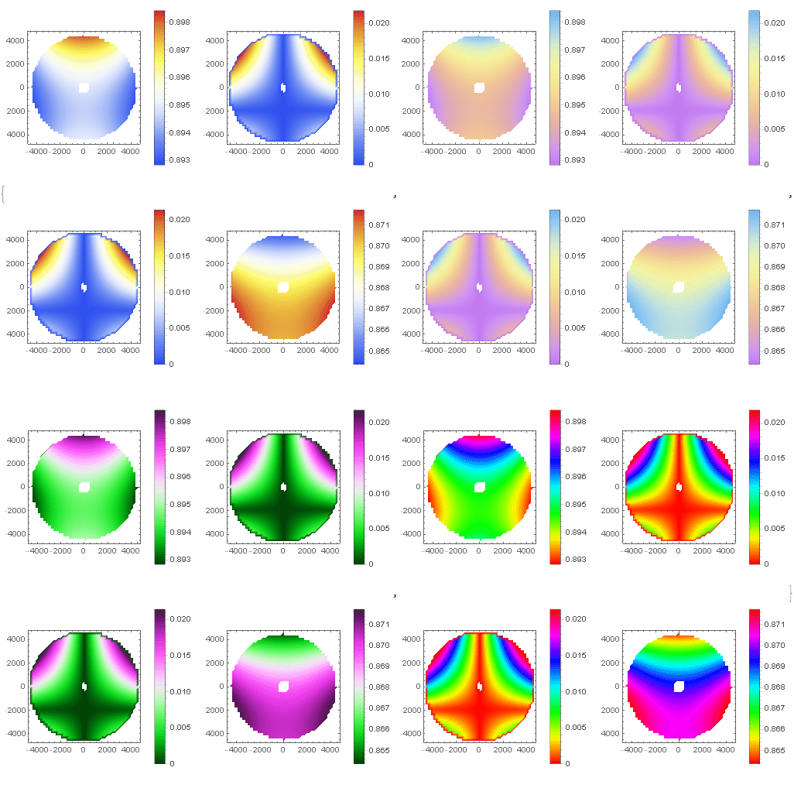

Zoom (1)
The central part of the Pupil can be plotted with Zoom.
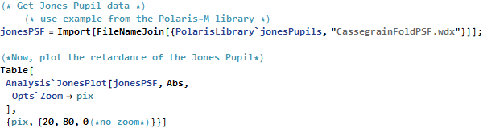

GridSize (1)
The size of the plot can be changes with GridSize and ImageSize.
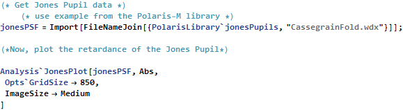
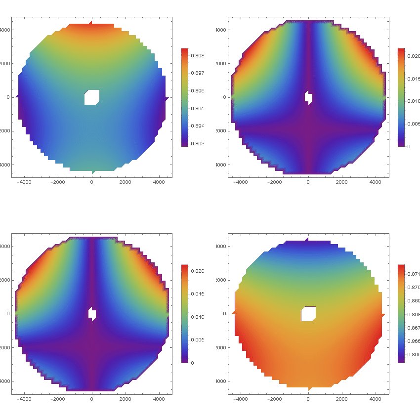
 • • •
• • •  •
•